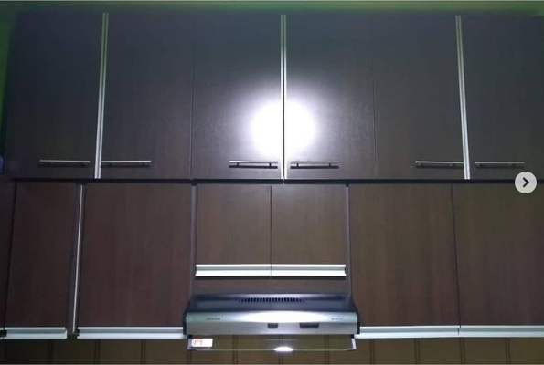

Alacenas
El término alacena hace referencia a un tipo de mueble que se utiliza para el almacenamiento de diferentes elementos. Se trata de un armario que dispone de puertas y de estantes o repisas, y que es habitual que se instale en un hueco realizado en una pared.
"Un buen trabajo en madera mejora cualquier ambiente de la casa u oficina" -Lionel Andrés Messi-
Cambios
Antes de Luxury
Despues de Luxury
Sobre-Alacena
Realizamos esta tremenda sobre alacena para ocupar un espacio libre en la cocina y aprovechar el lugar al máximo üí• La misma fue realizada en melamina blanca de 18mm de la marca Faplacüòè Le pusimos unos tiradores de aluminio id√©nticos a los que ten√≠a la alacena original para que, obviamente, combine todoü§ü
Convencional

Ideal para obtener un espacio extra en la cocina y diversos ambientes. Con finas terminaciones se erige como una de las opciones mas buscadas